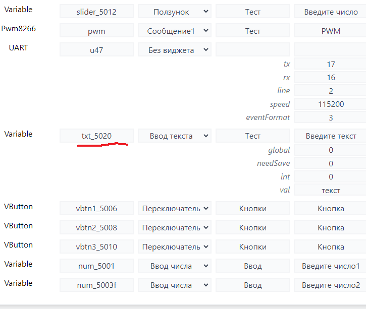

Работа с экраном Dwin
Работа с экраном Dwin
06/10/2023 от admin
(Страница в стадии наполнения)
Экраны компании Dwin позволяют решать многие проблемы интерфейса и простого управления своими системами.
Создание интерфейса со стороны программы DGUS рассмотрим вскользь по мере необходимости. Основное это настройки со стороны IoTmanager.
Это не мануал по пользованию экранами Dwin, как их подключать, прошивать, готовить фон и иконки и пользоваться программой Dgus. Тут мы рассмотрим нюансы взаимодействия с IotManager.
Пример и краткое видео доступны по ссылке.
На текущий момент возможен двухсторонний обмен с экраном:
На текущий момент для обмена необходимо подключить работу с UART. Режим работы с экраном Dwin это 3.
1 подключение к пинам
2 скорость, такая же как на cfg экрана
3 режим работы uart «3»
Переключатель
В программе DGUS используем 2 инструмента, Variable icon и поверх него Incremental Adjustment.

На рисунках выше видны настройки, Vp(0x) адрес ячейки памяти, начинается с 5000 и уникально для каждого элемента.
Для выставления статуса 0 или 1 необходимо настроить ячейки Adjust method, Over limit Operation, Adjusting step length, Lower limit, Upper limit, как указано на картинке.
В данном примере выбрано 5006, и создан виджет vbtn1_5006 (важно _5006)
Более ничего не нужно, передача статуса будет работать в обе стороны автоматически. Данный виджет vbtn1_5006 можно использовать с сценарии и он может быть даже не локальным, а на другой ESP (разумеется статус global и передачу событий необходимо включить)
Передача информации с датчиков
Передача информации с датчиков (цифровая информация) выполняется с помощью инструмента Data variables программы DGUS. В ячейку VP (0x) вписывается адрес ячейки памяти, который связан с виджетом в конфигурации IotManager.
В принципе особо комментарии и не нужны, обратите внимание только на букву «f» в конце виджета num_5003f. Есть нюансы в отправке дробных чисел на экран Dwin в IotManager:
Для отправки дробного числа необходимо добавить в конец ИД маркер f, т.е. var1_5000f
Аналогично добавляем поддержку типов строк — s и целых — i
По умолчанию, без указания типа данные будут отправляться в соответствии с внутренней интерпретацией, но всегда или целое или строка
Передача текстовой информации
Все необходимое подчеркнуто, используется инструмент Dgus Text Display.
Для корректной передачи текста, особенно с кириллицей нужно подготовить шрифты отдельно для этого. Как это сделать следует почитать в статье В. Радченко


Регулировка слайдером
Используются 2 инструмента Drag Adjustment и Slider Display.
Со стороны IotManager виджет «ползунок».
Анимация
Также необходимо обратить внимание на ячейки Variable type и Integer digits в описании элемента программы DGUS.
Обмен статусом (кнопка или переключатель) выполняется с помощью инструмента Incremental Adjustment программы DGUS. В ячейку VP (0x) вписывается адрес ячейки памяти, который связан с виджетом в конфигурации IotManager.
Передача команд на экран Dwin.РубрикиМодулиМеткиModules